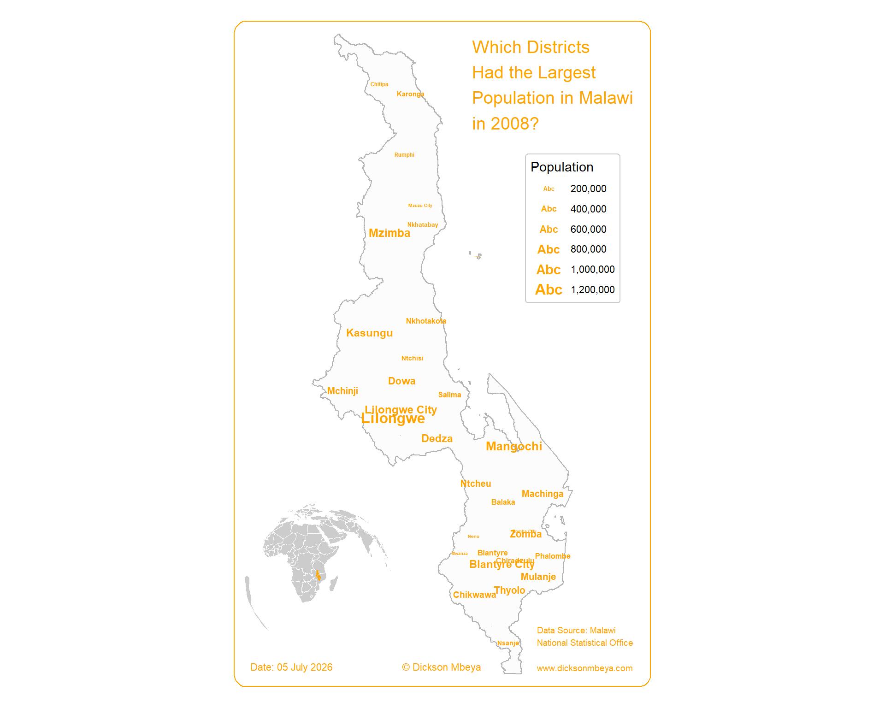

library(tmap)
library(dplyr)
library(sf)Introduction
I decided to visualise Malawi’s district population from the 2008 census. Instead of a traditional filled‑polygon choropleth, I used a typographic map—where the district names are scaled by their population. This technique makes the data self‑explanatory and adds an elegant, text‑heavy aesthetic that works well for social media.
Today I’ll walk you through the entire R workflow, from loading the shapefiles to adding an Africa locator inset. Let’s dive in!
1. Load the required packages
We need a handful of specialised packages:
sf– reads and handles spatial vector data (shapefiles).tmap– our main mapping engine; it uses a grammar of graphics similar toggplot2but is tailored for maps.dplyr– for quick data manipulation (renaming columns).extrafont– to use system fonts like Roboto for a modern, clean look. If you haven’t usedextrafontbefore, you can runfont_import()andloadfonts()once to make your system fonts available in R.
popn <- st_read("data/mw_popn.shp")Reading layer `mw_popn' from data source
`C:\Users\devmbeya\Documents\blog\posts\make_popn_map\data\mw_popn.shp'
using driver `ESRI Shapefile'
Simple feature collection with 32 features and 23 fields
Geometry type: MULTIPOLYGON
Dimension: XY
Bounding box: xmin: 3636988 ymin: -1935618 xmax: 3998420 ymax: -1047139
Projected CRS: WGS 84 / Pseudo-Mercatorbnd <- st_read("data/mw_bnd.shp")Reading layer `mw_bnd' from data source
`C:\Users\devmbeya\Documents\blog\posts\make_popn_map\data\mw_bnd.shp'
using driver `ESRI Shapefile'
Simple feature collection with 22 features and 1 field
Geometry type: POLYGON
Dimension: XY
Bounding box: xmin: 464479.7 ymin: 8105086 xmax: 814025.4 ymax: 8964834
Projected CRS: WGS 84 / UTM zone 36S2. Read the spatial data
The data comes from the Malawi National Statistical Office and contains district boundaries and population counts for 2008.
In this example I store the shapefiles inside a data/ folder relative to the project root. This makes the script portable and reproducible.
First, I read the population point/centroid layer which contains the district names and population counts:
popn <- st_read("data/mw_popn.shp")Reading layer `mw_popn' from data source
`C:\Users\devmbeya\Documents\blog\posts\make_popn_map\data\mw_popn.shp'
using driver `ESRI Shapefile'
Simple feature collection with 32 features and 23 fields
Geometry type: MULTIPOLYGON
Dimension: XY
Bounding box: xmin: 3636988 ymin: -1935618 xmax: 3998420 ymax: -1047139
Projected CRS: WGS 84 / Pseudo-MercatorNext, I read the district boundary polygon layer which will serve as the background map:
bnd <- st_read("data/mw_bnd.shp")Reading layer `mw_bnd' from data source
`C:\Users\devmbeya\Documents\blog\posts\make_popn_map\data\mw_bnd.shp'
using driver `ESRI Shapefile'
Simple feature collection with 22 features and 1 field
Geometry type: POLYGON
Dimension: XY
Bounding box: xmin: 464479.7 ymin: 8105086 xmax: 814025.4 ymax: 8964834
Projected CRS: WGS 84 / UTM zone 36SLet’s inspect the population data to see what columns we have:
head(popn)Simple feature collection with 6 features and 23 fields
Geometry type: MULTIPOLYGON
Dimension: XY
Bounding box: xmin: 3667131 ymin: -1884697 xmax: 3932595 ymax: -1047139
Projected CRS: WGS 84 / Pseudo-Mercator
DIST_NAME DISTRICT REGION Shape__Are Shape__Len
1 Balaka Balaka Central 2309288545 227264.32
2 Blantyre Blantyre South 1935900658 314395.31
3 Blantyre City Blantyre City South 261111996 92609.81
4 Chikwawa Chikwawa South 5318053799 413383.01
5 Chiradzulu Chiradzulu South 825563720 184760.60
6 Chitipa Chitipa North 4499298409 627147.82
GlobalID CreationDa Creator EditDate Editor
1 {7732b160-5d5f-4f3c-a381-d8e5bbe4f9c2} 2022-02-06 mbeyad 2022-02-07 mbeyad
2 {1f059ed3-7289-4a55-a6d5-9b45872048fe} 2022-02-06 mbeyad 2022-02-07 mbeyad
3 {ead7d5d2-408f-4cce-bcba-827bb9a71dab} 2022-02-06 mbeyad 2022-02-07 mbeyad
4 {3ea276d9-a990-4a77-8e3b-d2807b223417} 2022-02-06 mbeyad 2022-02-07 mbeyad
5 {fa51c606-08ea-4b41-8340-ba68833bad02} 2022-02-06 mbeyad 2022-02-07 mbeyad
6 {20595550-2501-44ae-8f91-5786859edc50} 2022-02-06 mbeyad 2022-02-07 mbeyad
MALE1998 FEM1998 TOTAL1998 MALE2008 FEM2008 TOTAL2008 FEM2018 TOTAL2018
1 120706 132397 253103 151637 165111 316748 229105 438379
2 413429 395968 809397 164546 173501 338047 232756 451220
3 0 0 502053 337655 323789 661444 399092 800264
4 178217 178465 356682 217981 220914 438895 287794 564684
5 111376 124674 236050 137194 153752 290946 187196 356875
6 60682 66117 126799 86152 92920 179072 120535 234927
MALE2018 POPDEN2008 POPDEN1998 AREA_KM2 DEN2018
1 209274 148 119 2133.8513 205
2 218464 189 453 1788.3027 252
3 401172 2805 2129 235.8099 3394
4 276890 90 73 4891.6565 115
5 169679 382 310 762.5165 468
6 114392 42 30 4247.7344 55
geometry
1 MULTIPOLYGON (((3916682 -16...
2 MULTIPOLYGON (((3908694 -17...
3 MULTIPOLYGON (((3905701 -17...
4 MULTIPOLYGON (((3822326 -17...
5 MULTIPOLYGON (((3913071 -17...
6 MULTIPOLYGON (((3673613 -10...Looking at the output, I can see the column TOTAL2008 holds the total population for each district. I’ll rename it to something more intuitive for our mapping:
popn <- popn %>%
rename(Population = TOTAL2008)Now we have a clean attribute called Population that we can use in our map.
3. Design the main typographic map
This is the heart of the visual. Instead of colouring polygons, I use tm_text() to place the district names directly on the map. The size argument is mapped to the Population column—so larger populations appear in bigger text.
Let’s break down the styling choices:
Background – a very light grey ("grey99") for the districts, with thin grey borders ("grey70"). This keeps the focus on the text.
Text colour – bright orange ("orange") stands out beautifully against the light grey.
Layout – I added generous inner margins so the text doesn’t touch the frame. The frame itself is rounded (frame.r = 10) and coloured orange to tie the design together.
Legend – I place it at the top right (position c(0.7, 0.8)) with a light grey frame.
Title – a multi‑line, attention‑grabbing question. The title is placed on the right side, with a white background to improve readability.
Credits – three separate credits cover the challenge tag, my name, and the data source. I use Roboto throughout for consistency.
mypop <- tm_shape(bnd) +
tm_polygons(fill = "grey99", col = "grey70") +
tm_shape(popn) +
tm_text(text = "DISTRICT",
size = "Population",
col = "orange",
fontface = "bold") +
tm_layout(inner.margins = c(0.02, 0.3, 0.02, 0.3),
outer.margins = c(0.03, 0.02, 0.03, 0.02),
frame.r = 10,
frame.lwd = 1,
frame.color = "orange",
legend.frame.lwd = 1,
legend.frame.color = "grey80",
legend.title.fontfamily = "Roboto Light",
legend.position = c(0.7, 0.8)) +
tm_title("Which Districts\nHad the Largest\nPopulation in Malawi\nin 2008?",
color = "orange",
size = 1.2,
bg = TRUE,
bg.alpha = 1,
position = c("right", "top"),
frame = FALSE) +
tm_credits("Date: 05 July 2026",
position = c("left", "bottom"),
size = 0.7, color = "orange",
fontfamily = "Roboto") +
tm_credits("© Dickson Mbeya",
position = c("center", "bottom"),
size = 0.7, color = "orange",
fontfamily = "Roboto") +
tm_credits("Data Source: Malawi\nNational Statistical Office\n\nwww.dicksonmbeya.com",
fontfamily = "Roboto",
position = c("right", "bottom"),
size = 0.6, color = "orange")Why text‑sized names instead of a classic choropleth?
Because readers can immediately identify the largest districts without needing to consult a legend. The text itself becomes the visual variable, which is both intuitive and visually striking.
4. Build a locator inset map
When you share maps online, not everyone knows exactly where Malawi is. A small locator map solves that problem.
I use an orthographic projection centered on Malawi’s coordinates (lat_0 = -13.98, lon_0 = 33.77). This creates a globe‑like effect that makes the country pop out from the rest of Africa.
First, I load the world dataset using the rnaturalearth package:
library(rnaturalearth)Warning: package 'rnaturalearth' was built under R version 4.5.3world <- ne_countries(scale = "medium", returnclass = "sf")Next, I define the orthographic projection and transform both the world and Malawi boundaries:
ortho_crs <- "+proj=ortho +lat_0=-13.98 +lon_0=33.77"
world_ortho <- st_transform(world, crs = ortho_crs)
bnd_ortho <- st_transform(bnd, crs = ortho_crs)Now I build the locator map. African countries are filled with light grey, while Malawi is outlined in bright orange:
locator_map <- tm_shape(world_ortho) +
tm_polygons(col = "grey80", border.col = "white", lwd = 0.3) +
tm_shape(bnd_ortho) +
tm_borders(col = "orange", lwd = 1) +
tm_layout(frame = FALSE, bg.color = "white")── tmap v3 code detected ───────────────────────────────────────────────────────[v3->v4] `tm_polygons()`: use 'fill' for the fill color of polygons/symbols
(instead of 'col'), and 'col' for the outlines (instead of 'border.col').
This message is displayed once every 8 hours.The white background and no frame ensure the inset integrates cleanly with the main map.
5. Combine everything with tm_inset()
Now I overlay the locator map onto the main map using tm_inset().
I set the inset size to 9 which works well with the existing layout dimensions. The position c(0, 0.3) places it at the left side, slightly below the top margin.
final_map <- mypop +
tm_inset(locator_map,
width = 9,
height = 9,
position = c(0, 0.3))
final_mapWarning in graphics::strwidth(comp$title, units = "inch", cex = titleS, : font
family not found in Windows font databaseWarning in graphics::strwidth(comp$text, units = "inch", family =
comp$fontfamily, : font family not found in Windows font databaseWarning in grid.Call.graphics(C_text, as.graphicsAnnot(x$label), x$x, x$y, :
font family not found in Windows font database
Warning in grid.Call.graphics(C_text, as.graphicsAnnot(x$label), x$x, x$y, :
font family not found in Windows font database
Warning in grid.Call.graphics(C_text, as.graphicsAnnot(x$label), x$x, x$y, :
font family not found in Windows font database
6. Save the final output
You can export the map as a high‑resolution PNG for sharing on social media, in presentations, or for print.
#tmap_save(final_map, "2008_Population.png", width = 10, height = 8, dpi = 300)What the map reveals
Looking at the scaled district names, Lilongwe (the capital), Blantyre (the commercial hub), and Mzimba (the northern giant) clearly dominate the population distribution. The text‑size approach makes this pattern visible instantly—without needing a separate colour legend.
The map also reveals interesting spatial patterns: - The central region (Lilongwe) has the highest population - The southern region (Blantyre) is the second most populated - The northern region (Mzimba) has large populations but more spread out
Final thoughts
This map was a fun exercise in using tmap’s typographic capabilities. By focusing on text rather than fill colours, I created a poster‑style visual that is both informative and decorative.
Key takeaways for your own maps:
- Don’t be afraid to use
tm_text()for quantitative data – size scaling works beautifully - Always add a locator inset when your audience might be global
- Small typographic touches (fonts, frame colours, margin control) elevate the final product
- Using a light background with bold text creates a clean, professional look
If you have any questions about the code or want to adapt it for your own country, feel free to reach out!
Happy mapping, everyone!
– Dickson